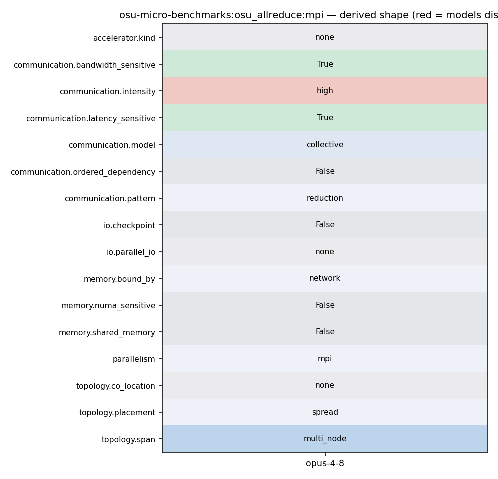

mpirun -np <N> ./osu_allreduce
42 po_ret = process_options(argc, argv); 43 omb_populate_mpi_type_list(mpi_type_list); 44 45 if (PO_OKAY == po_ret && NONE != options.accel) { 46 if (init_accel()) { 47 fprintf(stderr, "Error initializing device\n"); 48 exit(EXIT_FAILURE); 49 } 50 } 51 52 omb_init_h = omb_mpi_init(&argc, &argv); 53 omb_comm = omb_init_h.omb_comm;
124 fprintf(stdout, "# Datatype: %s.\n", mpi_type_name_str)); 125 fflush(stdout); 126 print_only_header(rank); 127 for (size = options.min_message_size; size <= options.max_message_size; 128 size *= 2) { 129 num_elements = size / mpi_type_size; 130 if (0 == num_elements) { 131 continue;
130 if (0 == num_elements) { 131 continue; 132 } 133 if (size > LARGE_MESSAGE_SIZE) { 134 options.skip = options.skip_large; 135 options.iterations = options.iterations_large; 136 }
143 if (1 == options.omb_enable_mpi_in_place) { 144 sendbuf = MPI_IN_PLACE; 145 } 146 for (i = 0; i < options.iterations + options.skip; i++) { 147 if (i == options.skip) { 148 omb_papi_start(&papi_eventset); 149 } 150 if (options.validate) { 151 set_buffer_validation(sendbuf, recvbuf, size, options.accel, 152 i, omb_curr_datatype, 153 omb_buffer_sizes); 154 for (j = 0; j < options.warmup_validation; j++) { 155 MPI_CHECK(MPI_Barrier(omb_comm)); 156 MPI_CHECK(MPI_Allreduce(sendbuf_warmup, recvbuf_warmup, 157 num_elements, omb_curr_datatype, 158 MPI_SUM, omb_comm)); 159 } 160 MPI_CHECK(MPI_Barrier(omb_comm)); 161 } 162 163 t_start = MPI_Wtime(); 164 MPI_CHECK(MPI_Allreduce(sendbuf, recvbuf, num_elements, 165 omb_curr_datatype, MPI_SUM, omb_comm)); 166 t_stop = MPI_Wtime();
124 fprintf(stdout, "# Datatype: %s.\n", mpi_type_name_str)); 125 fflush(stdout); 126 print_only_header(rank); 127 for (size = options.min_message_size; size <= options.max_message_size; 128 size *= 2) { 129 num_elements = size / mpi_type_size; 130 if (0 == num_elements) { 131 continue;
160 MPI_CHECK(MPI_Barrier(omb_comm)); 161 } 162 163 t_start = MPI_Wtime(); 164 MPI_CHECK(MPI_Allreduce(sendbuf, recvbuf, num_elements, 165 omb_curr_datatype, MPI_SUM, omb_comm)); 166 t_stop = MPI_Wtime(); 167 MPI_CHECK(MPI_Barrier(omb_comm)); 168 169 if (options.validate) {
24 omb_graph_options_t omb_graph_options; 25 omb_graph_data_t *omb_graph_data = NULL; 26 int papi_eventset = OMB_PAPI_NULL; 27 options.bench = COLLECTIVE; 28 options.subtype = ALL_REDUCE; 29 size_t num_elements = 0; 30 MPI_Datatype omb_curr_datatype = MPI_SIGNED_CHAR; 31 int mpi_type_itr = 0, mpi_type_size = 0, mpi_type_name_length = 0;
161 } 162 163 t_start = MPI_Wtime(); 164 MPI_CHECK(MPI_Allreduce(sendbuf, recvbuf, num_elements, 165 omb_curr_datatype, MPI_SUM, omb_comm)); 166 t_stop = MPI_Wtime(); 167 MPI_CHECK(MPI_Barrier(omb_comm)); 168
161 } 162 163 t_start = MPI_Wtime(); 164 MPI_CHECK(MPI_Allreduce(sendbuf, recvbuf, num_elements, 165 omb_curr_datatype, MPI_SUM, omb_comm)); 166 t_stop = MPI_Wtime(); 167 MPI_CHECK(MPI_Barrier(omb_comm)); 168
161 } 162 163 t_start = MPI_Wtime(); 164 MPI_CHECK(MPI_Allreduce(sendbuf, recvbuf, num_elements, 165 omb_curr_datatype, MPI_SUM, omb_comm)); 166 t_stop = MPI_Wtime(); 167 MPI_CHECK(MPI_Barrier(omb_comm)); 168
24 omb_graph_options_t omb_graph_options; 25 omb_graph_data_t *omb_graph_data = NULL; 26 int papi_eventset = OMB_PAPI_NULL; 27 options.bench = COLLECTIVE; 28 options.subtype = ALL_REDUCE; 29 size_t num_elements = 0; 30 MPI_Datatype omb_curr_datatype = MPI_SIGNED_CHAR; 31 int mpi_type_itr = 0, mpi_type_size = 0, mpi_type_name_length = 0;
49 } 50 } 51 52 omb_init_h = omb_mpi_init(&argc, &argv); 53 omb_comm = omb_init_h.omb_comm; 54 if (MPI_COMM_NULL == omb_comm) { 55 OMB_ERROR_EXIT("Cant create communicator"); 56 } 57 MPI_CHECK(MPI_Comm_rank(omb_comm, &rank)); 58 MPI_CHECK(MPI_Comm_size(omb_comm, &numprocs)); 59 60 omb_graph_options_init(&omb_graph_options); 61 switch (po_ret) {
161 } 162 163 t_start = MPI_Wtime(); 164 MPI_CHECK(MPI_Allreduce(sendbuf, recvbuf, num_elements, 165 omb_curr_datatype, MPI_SUM, omb_comm)); 166 t_stop = MPI_Wtime(); 167 MPI_CHECK(MPI_Barrier(omb_comm)); 168
935 * MPI_Finalize. 936 * 937 * Example: 938 * - time mpirun_rsh -np 2 -hostfile hostfile osu_hello 939 940 ROCm, CUDA and OpenACC Extensions to OMB 941 ----------------------------------------